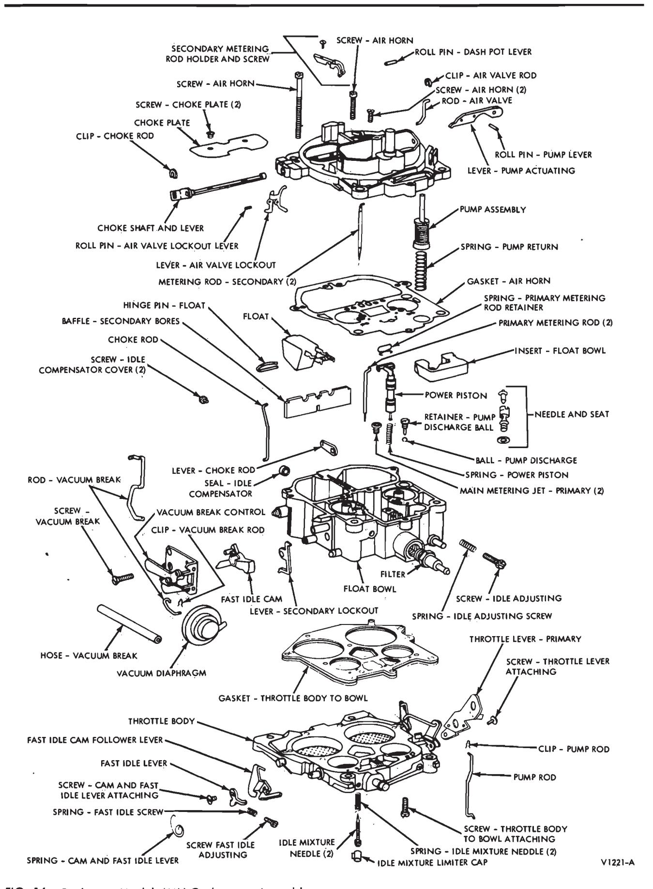
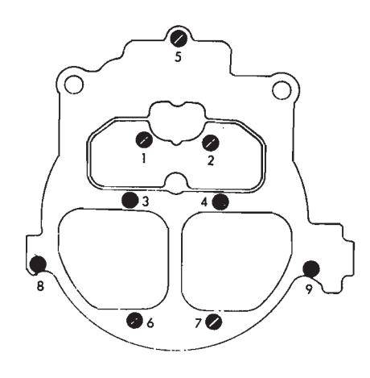
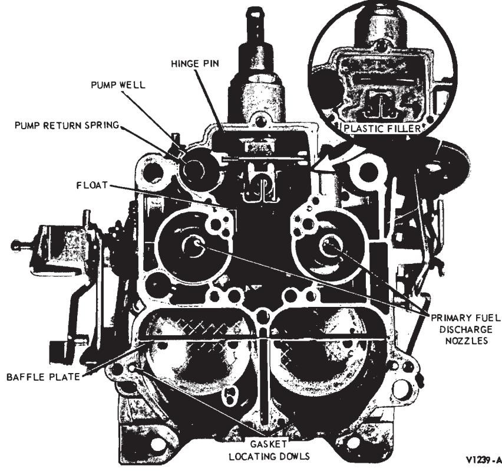

Rochester Quadrajet Model 4MV Carburetor · 23-07-05
Disassembly
To facilitate working on the carburetor, and to prevent damage to the throttle plates, install the carburetor on a holding fixture.
Use a separate container for the component parts of the various assemblies to facilitate cleaning, inspection and assembly.
Refer to Part 23-01 for removal and installation and cleaning and inspection.
The following is a step-by-step sequence of operations for completely overhauling the carburetor. However certain components of the carburetor may be serviced without a complete disassembly of the entire unit. For a complete carburetor overhaul, follow all of the steps. To partially overhaul a carburetor, follow only the applicable steps.
AIR Horn
Removal
Refer to Fig. 16 for identification of components and related parts for removal procedures.
-
Remove the clip from the upper end of the choke rod, disconnect upper end of choke rod from upper choke shaft lever. Remove the choke rod from the lower choke lever in the bowl by working the choke rod up and down until lower end of rod is free from lever.
-
Remove the clip from upper end of the pump rod; then disconnect pump rod from the pump lever.
-
Remove the vacuum break rod from vacuum diaphragm plunger by removing the retaining clip. Remove the other end of rod from air valve shaft lever.
-
Remove the secondary metering rods by removing small screw at top of the metering rod holder. Remove the rod holder and rods by lifting straight upward out of the air horn. Remove the secondary rods from the rod holder by sliding the end of each rod out of holder.
-
Remove the nine air horn-to-float bowl attaching screws. Two counter-sunk screws are located inside the air horn bore next to the primary venturi.
-
Remove the air horn by lifting straight up. The air horn gasket should remain on the bowl for removal later.
Invert the air horn on a clean bench. Do not bend the two small secondary main well air bleed tubes and accelerating well tubes. The tubes protrude from the air horn casting and are permanently pressed in place. Do not remove.
Disassembly
Refer to Fig. 16 for identification of the components and related parts for disassembly procedure.
-
Remove the two choke valve attaching screws. Then remove the choke valve and shaft.
-
Remove the pump lever roll pin and pump lever.
-
Remove the air valve lockout lever by driving the roll pin out with small drift punch.
-
If the air valve spring or secondary metering rod cam requires replacement, a repair kit is available. To replace these parts proceed as follows:
- a. Remove air valve spring fulcrum pin lock screw.
- b. Remove air valve spring fulcrum pin from casting.
- c. Remove air valve spring.
- d. Remove the four air valve attaching screws and remove valves from shaft.
- e. Remove the air valve shaft by sliding out of air horn casting. Then, the plastic metering rod cam can be removed
No further disassembly of the air horn is required.
Assembly
Refer to Fig. 16 for identification of the components and related parts for assembly procedure.
- Install the pump lever and roll pin.
- Install the dash pot plunger rod through the air horn and attach to the air valve lever. Install the clip retainer
- Install the air valve lockout lever and roll pin. Make sure the lever is free from binds.
- Install the choke shaft, choke plate and two attaching screws. Tighten and stake choke plate screws.
- If it was necessary to replace the air valve closing spring, and the air valve shaft was removed, install the air valve shaft, plastic cam, air valves, and attaching screws. Center the air valves, tighten screws and stake in place. Make sure air valve operates freely with no binds. Then install the air valve closing spring in the air horn cavity. Insert the spring pin, adjust air valve closing spring.
Installation
- Carefully place the air horn assembly on the float bowl, aligning secondary well bleed tubes and accelerating well tubes with the proper holes in air horn gasket. Position the pump plunger stem with the hole in the air horn and dash pot in the well in the float bowl. Gently lower the air horn assembly until it is seated on gasket.
- Install the nine air horn-to-float bowl attaching screws. Two long screws go through the secondary side of the air horn at the rear and two counter-sunk screws inside the primary bores next to the venturi. Tighten all screws evenly and securely in sequence as shown in Fig. 17.
- Install the upper end of the pump rod into the specified hole in the pump lever. Retain with spring clip.
- Install the choke rod into the lower inside lever in the float bowl cavity. Connect the upper end to the choke shaft lever and retain with clip.
- Install the end of the combination vacuum break and air valve dash pot rod into the lever on the end of the air valve shaft. End of rod goes inward towards air valves—connect the other end of rod to the choke diaphragm plunger. Retain with clip.
- Install the secondary metering rods into the metering rod holder. End of rods point inward, towards each other.
- Carefully lower the secondary rods through the holes in air horn into secondary main metering orifice plates. The holder will then seat on the secondary metering rod actuating lever. Install the retaining screw and tighten securely. Open and close air valve to check for any binds.
Throttle Body
Refer to Fig. 16 for identification of the components and related parts.

Fig. 16 — Rochester Model 4MV Carburetor Assembly
Disassem Bly
-
Remove the pump rod from the throttle lever by rotating the rod out of the primary throttle lever.
-
Remove the two idle limiters and idle mixture screws and springs.
-
The fast idle lever and fast idle cam follower lever can be removed for replacement by removing the at-

Fig. 17 — Air Horn Attaching Screws Tightening Sequence taching screw in the end of the primary throttle shaft.
There is a torsion spring which ties the two levers together. Make sure to check the spring location for ease in reassembly.
Assembly
- Install the fast idle cam follower and the fast idle lever on end of primary throttle shaft. Install the torsion spring and retaining screw in the end of the shaft. Tighten securely.
- Install the two idle mixture needles and springs until lightly seated. Back out the mixture needles 1 1/2 turn as an initial adjustment if the idle limiters have been removed.
- Install the pump rod into the hole in the throttle lever. The end of the rod points outward away from the casting.
Float Bowl
Refer to Figs. 16 and 18 for identification of the float bowl and related parts.
Disassembly
-
Remove the pump plunger from the pump well.

Fig. 18 — Float Bowl -
Remove the air horn gasket from the dowels on the secondary side of the bowl, then remove the gasket from around the power piston and primary metering rods.
-
Remove the pump return spring from the pump well.
-
Remove the plastic filler block over the float valve (Fig. 18).
-
Remove the power piston and the primary metering rods as an assembly.
The power piston retainer is plastic and is part of the power piston assembly. The retainer fits in a recess at the top of the power piston cavity. The retainer can be removed by pushing downward against spring tension and allowing the piston to snap back against the retainer until it pops out of casting.
-
Remove the primary metering rods from the power piston by disconnecting the tension spring loops from the top of each rod, then rotate each metering rod to remove from hanger. Use care when disassembling the rods to prevent distortion of the tension spring and/or metering rods.
-
Remove the power piston spring from the power piston cavity.
-
Remove the float assembly by pulling upward on hinge pin. The float needle and hinge pin can now be removed from the float assembly.
-
Remove the float needle seat and gasket from the float bowl.
Float needle and seat are factory matched and tested and should be replaced as a set.
-
Remove the primary main metering jets. No attempt should be made to remove secondary metering discs. Normal cleaning is all that is necessary.
-
Remove the pump discharge check ball retainer and steel check ball.
-
Remove the baffle plate from the secondary bores by lifting straight upward, out of slots in the sides of the bores.
-
Remove the vacuum hose from the vacuum break diaphragm unit and from the tube connection on the bowl.
-
Remove the retaining screw from the choke bracket assembly and remove the assembly from the float bowl.
-
Slide the fast idle cam off of the bushing on the choke bracket.
-
Spread the retaining ears on the bracket next to the vacuum diaphragm, then slide the vacuum diaphragm assembly out of the bracket.
Assembly
- Install a new throttle bodyto-bowl insulator gasket, making sure the gasket is properly positioned on two locating dowels on the bottom of the float bowl.
- Install the throttle body, making certain throttle body is properly located over dowels on the float bowl. Install three throttle body-to-bowl screws and tighten evenly and securely.
- ly.3. Place the carburetor on a work stand or holding fixture.
- Install a fuel inlet filter and tighten securely.
- Install the float needle seat and gasket and tighten securely.
- Install the float hinge pin in the float arm with the open end of the hinge pin points toward the pump well.
- Install the float needle and the pull clip on the end of the float arm. The needle pull clip should be in- - stalled so that it hooks over the top of the float arm. Do not place pull clip through small holes in top of float arm. Severe flooding will result.
- Lower the float assembly into the float bowl making sure the needle enters the float needle seat and that the float hinge pin seats in the grooves in the bowl casting. The upper loop on the float hinge pin should be above the bowl casting surface (minimum 0.015-inch at highest point) for proper retention.
- Adjust the fuel lever float as described in In-Vehicle Adjustments and Repairs.
- Install the power piston spring in the power piston well. If the primary metering rods were removed from the hanger, re-install making sure the tension spring is hooked over the top end of each metering rod. Install the power piston assembly in the well with the metering rods carefully positioned in the metering jets. Press - down firmly on the power piston to provide engagement of the retaining pin in the throttle body gasket.
- Install the power piston in the well and force the plastic retainer into the cavity until the edge is flush with the top of the casting.
- Install the plastic filler block over the float needle; press downward until seated.
- Install the pump return spring into the pump well.
- Install the air horn gasket around the primary metering rods and piston. Position the gaskets over the two dowels on the secondary side of the float bowl.
- Install the pump plunger in the pump well, then install the air horn.
- Install the carburetor on the engine. Tighten the mounting bolts to the specified torque. First, tighten a front bolt, then the diagonal rear bolt, then the other front bolt to the other rear bolt.